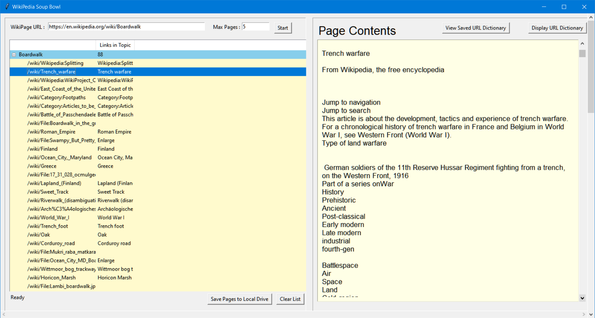
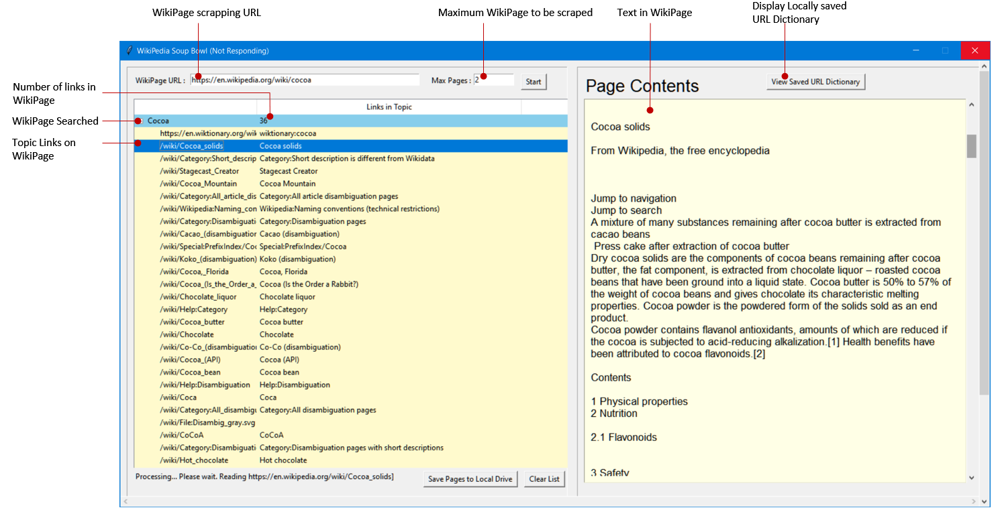
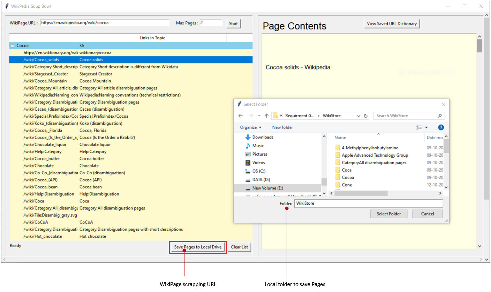
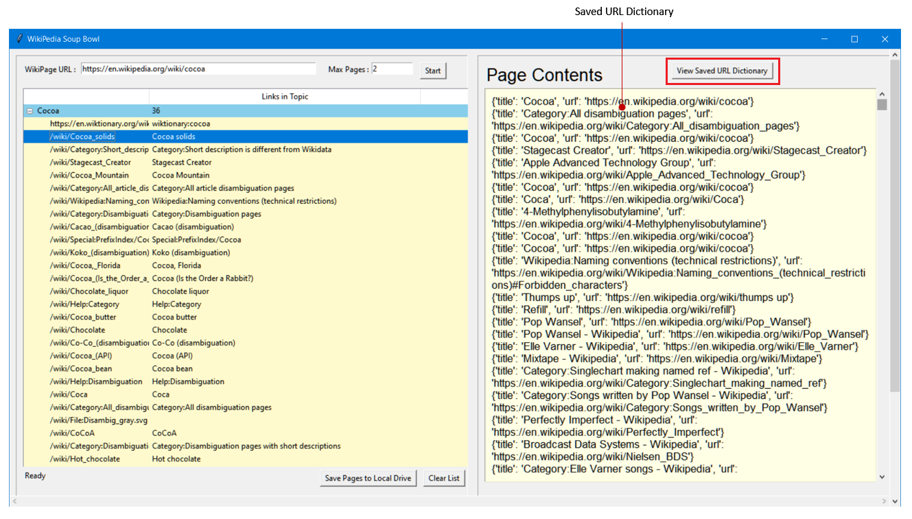
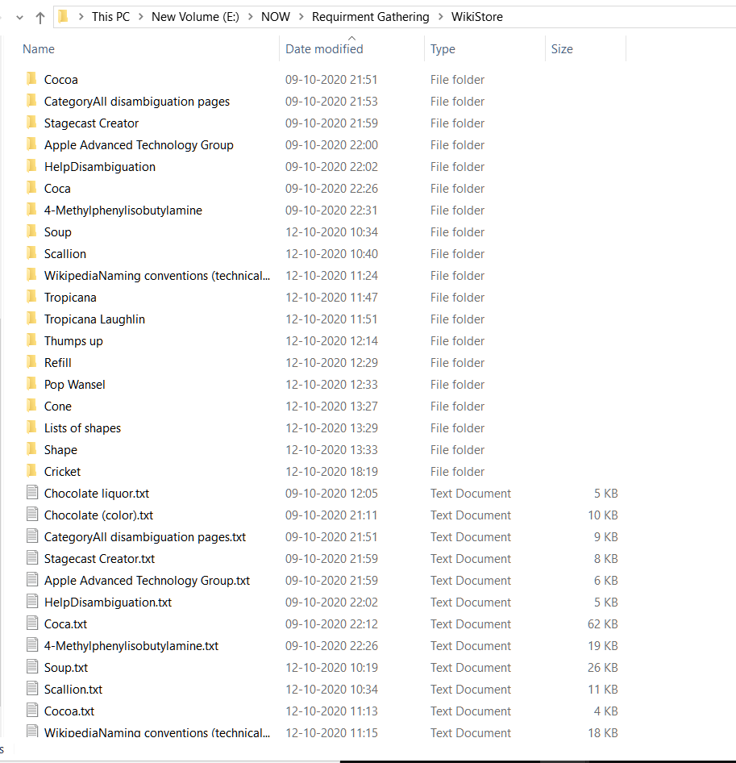
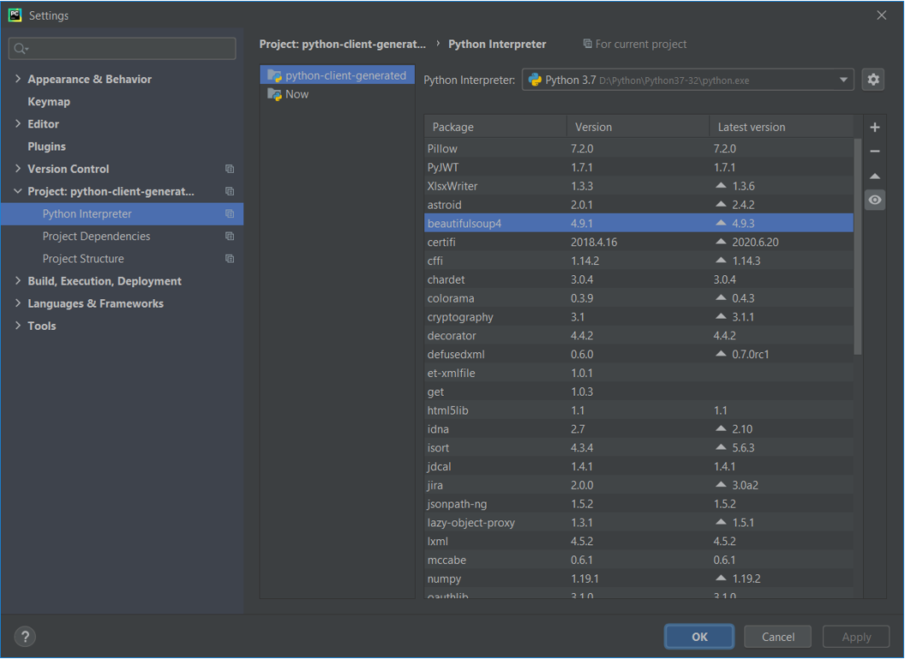

18. WebScraping WikiPages using Python and listing into TreeView
-
-
Cover Page
18. WebScraping WikiPages using Python and listing into TreeView
Date : 12-October-2020

-
Introduction
What is WikiPedia?
The online encyclopedia project Wikipedia is the most popular wiki-based website, and is one of the most widely viewed sites in the world, having been ranked in the top ten since 2007. Wikipedia is not a single wiki but rather a collection of hundreds of wikis, with each one pertaining to a specific language.
In addition to Wikipedia, there are hundreds of thousands of other wikis in use, both public and private, including wikis functioning as knowledge management resources, notetaking tools, community websites, and intranets. The English-language Wikipedia has the largest collection of articles: as of February 2020, it has over 6 million articles.
Ward Cunningham, the developer of the first wiki software, WikiWikiWeb, originally described wiki as "the simplest online database that could possibly work." "Wiki" (pronounced ['wiki]) is a Hawaiian word meaning "quick."
What is WikiPedia Soup Bowl?
Wikipedia Soup Bowl is a webscraping tool interface for wikipages developed using Python and related libraries like BeautifulSoup.
It accepts Wikipage URL and the number of page to scrape as input. It downloads the Wikipage and related links in that page and displays it in TreeView.
The content of selected Wikipage and list of wikilinks in that page are displayed. User can select the Wikilink and it's contents are displayed to user.
User can download the wikipages to local drive as text files. The dictionary of downloaded wikipages is saved on local drive as URL Dictionary.
User can view the URL Dictionary.
-
Wikipedia Soup Bowl Interface
Following image shows the Form Interface of WikiPedia Soup Bowl.

User can save the Wikipage in local folder as shown in image below,

Wikipedia Soup Bowl saves the wikipages in local folder and also maintain the URL Dictionary, that can be viewd by clicking 'View Saved URL Dictionary' button as shown in image below,

Wikipages are saved in local folder as shown in image below,

-
Python libraries used
Beautiful Soup is a library that makes it easy to scrape information from web pages.
The beautifulsoup4 4.9.3 library is downloaded from here
Following image shows the downloaded python libraries in Pycharm Settings window:

-
Download and links
1. mySoup.7z : Zip file containing python module for webscraping Wikipages.
(mySoup.py)
2. beautifulsoup4 4.9.3
Version : beautifulsoup4 4.9.3
Setup command : pip install beautifulsoup4